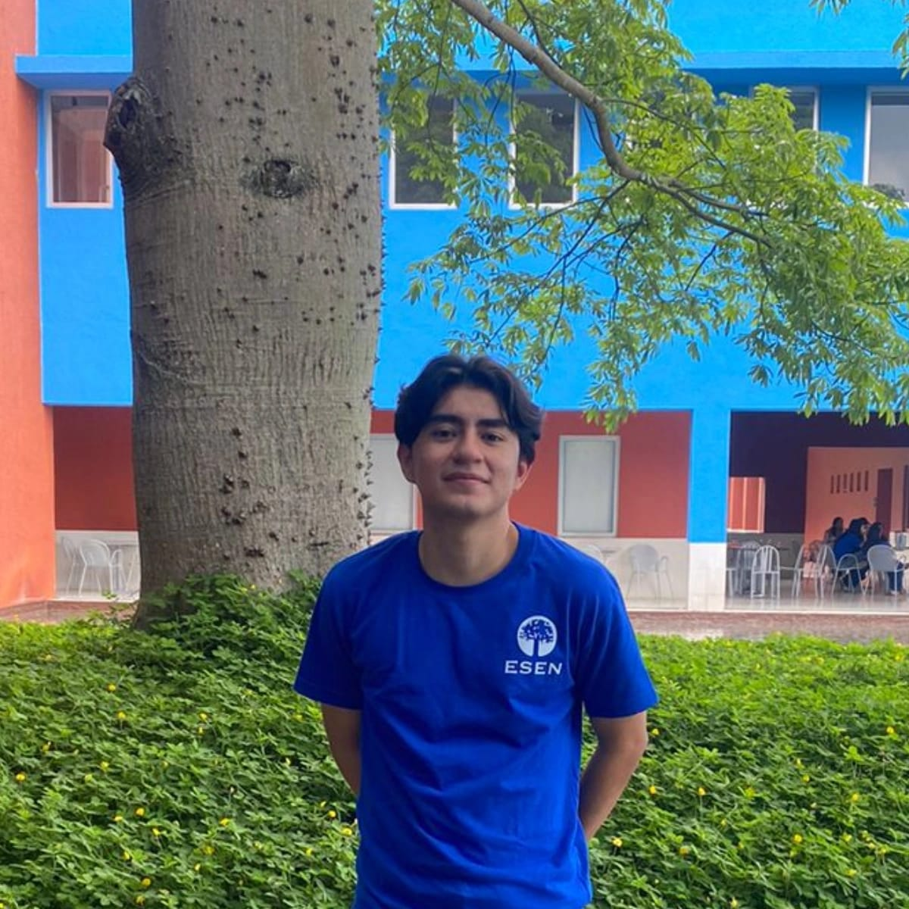
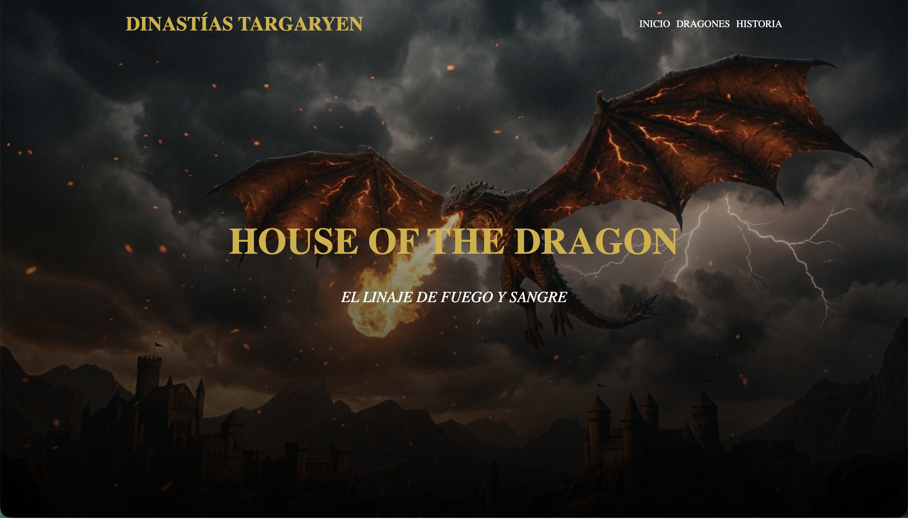
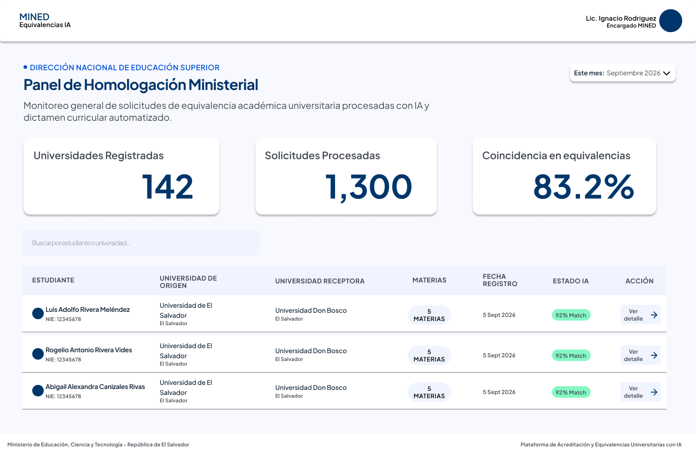

"Creando experiencias digitales donde el diseño, el código y la creatividad encuentran un punto en común."
HTML, CSS, JS
El Salvador, San Salvador
Programador Web
01/ Biografía
Soy un estudiante de Software y Negocios Digitales con una curiosidad constante por la tecnología, el diseño y la forma en que ambos pueden trabajar juntos. Mi proceso nace de experimentar, aprender y convertir ideas en proyectos digitales que no solo funcionen correctamente, sino que también tengan una identidad visual clara y una intención detrás de cada detalle.
A lo largo de mi formación he trabajado en proyectos de desarrollo web, aplicaciones móviles, bases de datos y programación, explorando distintas herramientas y tecnologías mientras construyo mi propia manera de resolver problemas. Me interesa especialmente encontrar el equilibrio entre lógica y creatividad: escribir código que sea funcional, pero también crear experiencias que se sientan cuidadas, simples y auténticas.
Creo que un buen proyecto no necesita complicarse para destacar. Para mí, el valor está en entender la idea, cuestionar cómo puede hacerse mejor y prestar atención a esos pequeños detalles que terminan haciendo que una experiencia digital se sienta completa.
02/ Formación Académica
Registro de formación
03/ Proyectos
Una selección de creaciones espciales

Diseño y desarrollo de una página web sobre una serie favorita, utilizando HTML y CSS en la materia de Web 1.
Desarrollo de una API conectada a una base de datos para gestionar y consultar los registros de la empresa, en la materia de DAI.

Diseño de un prototipo en Figma para un sistema de equivalencias académicas dirigido al MINED, en la materia de Metodologías Ágiles.
04/ Contacto
Disponible para proyectos
Ya sea para programar una web de empresa, restaunrante o desarrollar un prototipo